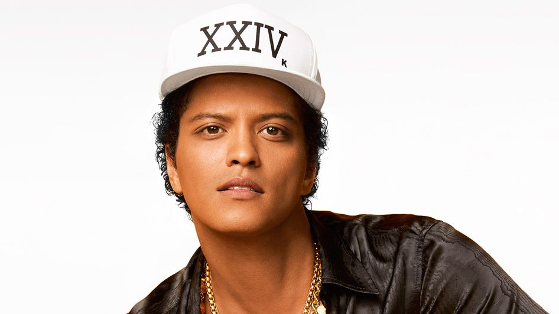
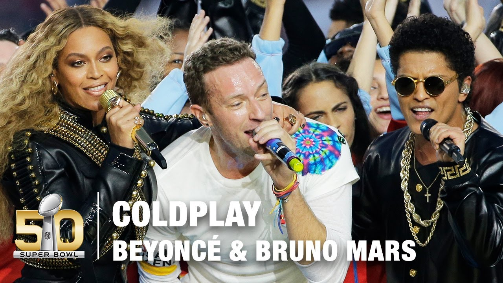
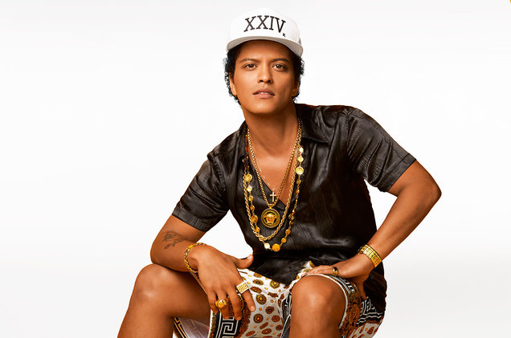
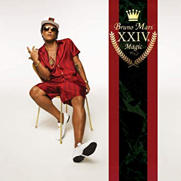

Peter Gene Hernandez (born October 8, 1985), known as Bruno Mars, is an American singer, songwriter, multi-instrumentalist, record producer, and dancer. He is known for his stage performances, retro showmanship and for performing in a wide range of musical styles including R&B, funk, pop, soul, reggae, hip hop, and rock. Mars is accompanied by his band, The Hooligans, who play a variety of instruments such as electric guitar, bass, piano, keyboards, drums and horns, and also serve as backup singers and dancers.

Bruno Mars started his early career by adopting the stage name ‘Bruno Mars’. He later signed to Motown Records in 2004 and he got the opportunity to meet the producer and songwriter Philip Lawrence who also was signed to the same label as Bruno.Philip Lawrence introduced Mars to Atlantic Records in 2006. Mars’ career took off and in addition to his career as a singer, he collaborated with Philip Lawrence and Ari Levine to the record producing and songwriting team.Mars released his first debut single ‘Just The Way You Are’ from his album ‘Doo-Woops & Hooligans’ and his single peaked at No.1 on the Billboard Hot 100. The album was titled “the year’s finest pop debut’ and catapulted Mars to international stardom.His second album was released in 2012 entitled ‘Unorthodox Jukebox’ and one of the album’s lead singles ‘Locked Out of Heaven’ topped the Billboard Hot 100 for over six weeks in 20 countries.After making a huge international success his album became a critical commercial success also.Since then, Bruno Mars is a worldwide artist that has collaborated with a some of the finest artists in the world including Beyonce and Cardi B.As of 2019, Bruno Mars’ net worth is estimated to be $150 million.
His Halftime Show with Beyonce and Coldplay was one of the best ever!

The Super Bowl 50 Halftime Show took place on February 7, 2016, at Levi's Stadium in Santa Clara, California as part of Super Bowl 50. It was headlined by the British rock group Coldplay with special guest performers Beyoncé and Bruno Mars, who previously had headlined the Super Bowl XLVII and Super Bowl XLVIII halftime shows, respectively.
He is one of the best selling artists in the world!

According to the Recording Industry Association of America (RIAA), he is the ninth-bestselling digital-single artist in the United States with sales of 61.5 million. His first two albums have sold 5.04 million copies in the US alone. In 2012, Mars was named 2011's best selling artist worldwide.As of 2014, Mars has sold over 130 million records worldwide. As of 2017, the singer has sold over 180 million singles worldwide.
His recent album, 24k Magic, is one of the best albums ever!

24K Magic (stylized as XXIVk Magic) is the third studio album by American singer and songwriter Bruno Mars. It was released worldwide on November 18, 2016, by Atlantic Records. The follow-up to Mars's successful second album, Unorthodox Jukebox (2012), it explores genres similar to those of its predecessor, such as soul and funk, while Mars and his team focused on capturing the R&B sound that was very popular in the 1990s, described by the singer as the reason he fell in love with music in the first place.Recording sessions for the album took place between Fall 2015 and September 2016 at Glenwood Place Studios in Burbank, California.The production of the album was handled by newly formed production trio Shampoo Press & Curl, consisting of Mars, Brody Brown and Philip Lawrence. It is considered by some critics to be influenced by 1980s and early 1990s pop nostalgia. It is also the first album by Mars to enter the R&B and hip hop charts on Billboard, staying atop the R&B albums chart for 21 weeks.Five singles were released, the title track, "That's What I Like", "Versace on the Floor", "Chunky", and "Finesse" (Cardi B remix). "That's What I Like" became Mars's seventh number one on the Billboard Hot 100. As of September 2017, the album has accumulated two million album-equivalent units in the United States.On January 28, 2018, 24K Magic won the Grammys for Best Engineered Album, Non-Classical; Best R&B Album; and Album of the Year. As part of promotion for the album, Mars supported the album with his third worldwide concert tour, 24K Magic World Tour.